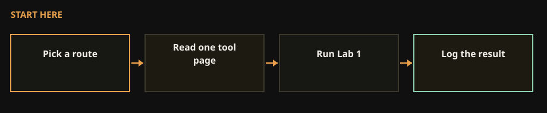
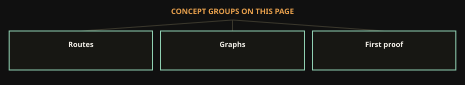

Start Here
One useful workflow today, a full system in weeks. Pick a route by time, run Lab 1 first, and keep each claim tied to a source.

Quick start route, about one hour
- Read the Home page answer and the versions dashboard. Ten minutes.
- Read the Foundations page harness table. Ten minutes.
- Run Lab 1 from the Labs page. Fix one bug with a test first flow. Thirty minutes.
- Copy one prompt from the Prompt Vault: the bug from evidence prompt. Use the prompt on Lab 1 code.
Standard route, two weeks
One tool page per day in this order: Claude, Codex, Grok, Gemini and Antigravity, Muse. One lab per week end. One prompt type per day from the vault. End state: a repo with a rule file map, one skill, one verify step and one eval set.
Deep study route, six weeks
Standard route plus the Research page, the Business page case anatomy work, and a full pass on the Sources ledger. End state: one research pipeline and one business workflow, each with a human gate and a log.
Task graph for this build
Identity checks --> Research per cluster --> Source ledger
| |
v v
Experiments (Labs) --> Tutorials --> Site build --> Verify --> Audit page
Independent branches ran in parallel: Grok, Claude, Gemini, Codex, Muse, cross-cutting.
Dependent steps ran in order: ledger join, synthesis, build, link check, review.
Evidence graph, core claims
| Claim | Relation | Source or test | Effect on advice |
|---|---|---|---|
| Fleets beat chats for throughput | supports | Cherny workflow, sources rows 16 to 18 | Teach worktrees and parallel sessions |
| Rule files act as maps | supports | OpenAI harness post row 33, Anthropic steering guide row 15 | Keep rule files near 100 to 200 lines |
| Volume metrics mislead | contradicts | Poteto revert rate reports rows 52 and 53 vs pull request counts | Report revert rate and eval pass rate |
| Score method ranks retrieval quality | demonstrates a limit | Lab 2 run in this build: both methods hit a ceiling at 1.0, no split | Claim no win for a method. Design a harder test |
| Grok 5 exists | supersedes, none | No release in sources by cutoff | Mark as a gap, print no spec |
Learning graph, shortest route per outcome
| Outcome | Route |
|---|---|
| Ship code with an agent | Foundations, Claude or Codex page, Lab 1, Prompts: spec, build, review |
| Run a research pipeline | Research page, Claude workflow C4, Lab 2, Prompts: synthesis, experiment, eval |
| Run a business workflow | Business page, Grok workflows G3 to G5, Lab 3, Prompts: delegation, audit |
| Build a solo stack | Cross-cutting page, Paths page standard route |

Visual map of this page
Three views of one page: a Mermaid flow for work order, a markmap for concept groups, and a read guide for the flow.
Mermaid source, for offline read
flowchart TD A[Quick route, one hour] --> B[Foundations] B --> C[Lab 1: test first fix] C --> D[Standard route, two weeks] D --> E[Deep route, six weeks]
How to read the flow diagram. Step 1: start at the left box. Step 2: follow each arrow to the next stage. Step 3: at a branch box, read both paths before a choice. Step 4: a loop arrow means work returns for one more pass vs a test.
Markmap: concepts on this page
- Start Here
- Routes
- Quick: one hour
- Standard: two weeks
- Deep: six weeks
- Graphs
- Task graph
- Evidence graph
- Learning graph
- First proof
- Lab 1 green tests
- One vault prompt in use
- Routes